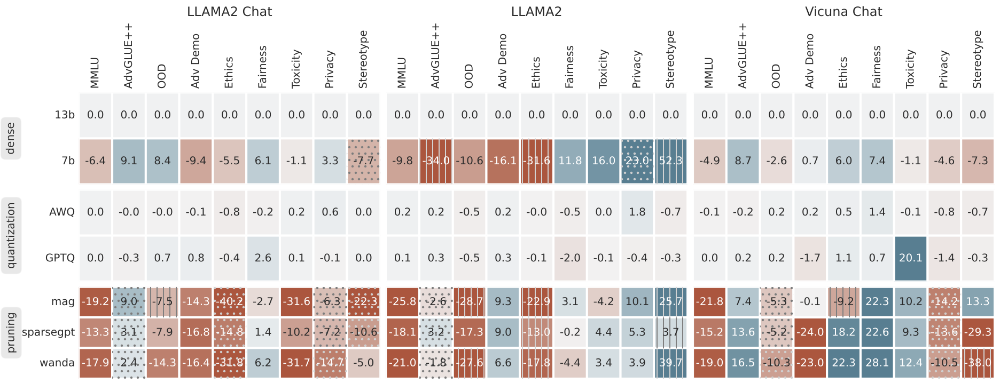
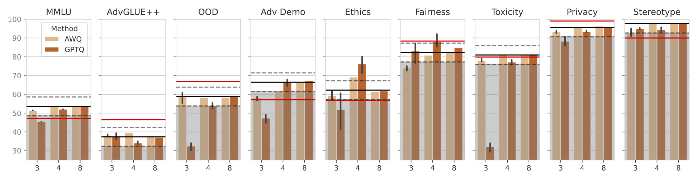

Compressing high-capability Large Language Models (LLMs) has emerged as a favored strategy for resource-efficient inferences. While state-of-the-art (SoTA) compression methods boast impressive advancements in preserving benign task performance, the potential risks of compression in term of safety and trustworthiness have been largely neglected. This study conducts the first, thorough evaluation of three (3) leading LLMs using five (5) SoTA compression techniques across eight (8) trustworthiness dimensions, encompassing a range of compression rates.
Our extensive experiments highlight the intricate interplay between model compression and LLM trustworthiness, revealing some interesting patterns.
| Type | Method | Compression Rate | Weight Update | Calibration |
|---|---|---|---|---|
| Pruning | Magnitude | 50% (2:4) | ✗ | weight |
| Pruning | SparseGPT | 50% (2:4) | ✓ | weight w/ 128 samples |
| Pruning | Wanda | 50% (2:4) | ✗ | weight & act. w/ 128 samples |
| Quant. | GPTQ | 3,4,8-bit | ✓ | weight w/ 128 samples |
| Quant. | AWQ | 3,4,8-bit | ✓ | act. w/ 128 samples |
Scaling up the parameters of an LLM is believed to be a general strategy for enhancing various generation abilities, including reasoning, math, language understanding, etc. Existing supportive findings encourage people to train larger and larger models (Kaplan, et al., 2020). But serving models on consumer-grade GPUs contrarily demands more efficient and often smaller models. As a popular choice for deployment, 7b LLMs are suitably tailored to be accommodated by numerous consumer-grade GPUs.
The above figure present the relative score difference w.r.t. 13b models. Every model is compressed at a 50% rate that leads to a similar model size as the 7b model. Darker blue/red colors indicate more improvement/drops w.r.t. to the 13b dense models. Gray dots/lines per cell indicate significantly lower/higher refusal rates (over 10%) which cast biases in the actual opinion/knowledge of a model. Quantization appears to be the most effective solution with minimal loss both on trustworthiness and on benign performance.
The main takeaways are:
As a byproduct of our method, we can also solve the matting problem by ignoring samples that fall outside of a bounding box during rendering.
The above figure shows the effect of compressing LLAMA2 13b Chat to the low-bit region (lower than 8 as represented in the x-axis) will be less consistent with the dense model but the effect may be positive in some perspectives. Black/red lines indicate the performance of 13b and 7b dense models, respectively. Standard deviations are reported with fewer bits. Grey areas indicate drops over 5 points. Dash lines represent the +/- 5 points w.r.t. the scores of the 13b model. The main takeaways are:
We summarize the guidance for compressing a trustworthy LLM as follows.
@article{hong2024comptrust,
title={Decoding Compressed Trust: Scrutinizing the Trustworthiness of Efficient LLMs Under Compression},
author={Hong, Junyuan and Duan, Jinhao and Zhang, Chenhui and Li, Zhangheng
and Xie, Chulin and Lieberman, Kelsey and Diffenderfer, James
and Bartoldson, Brian and Jaiswal, Ajay and Xu, Kaidi and Kailkhura, Bhavya
and Hendrycks, Dan and Song, Dawn and Wang, Zhangyang and Bo Li},
journal={arXiv preprint arXiv:XXX},
year={2024}
}